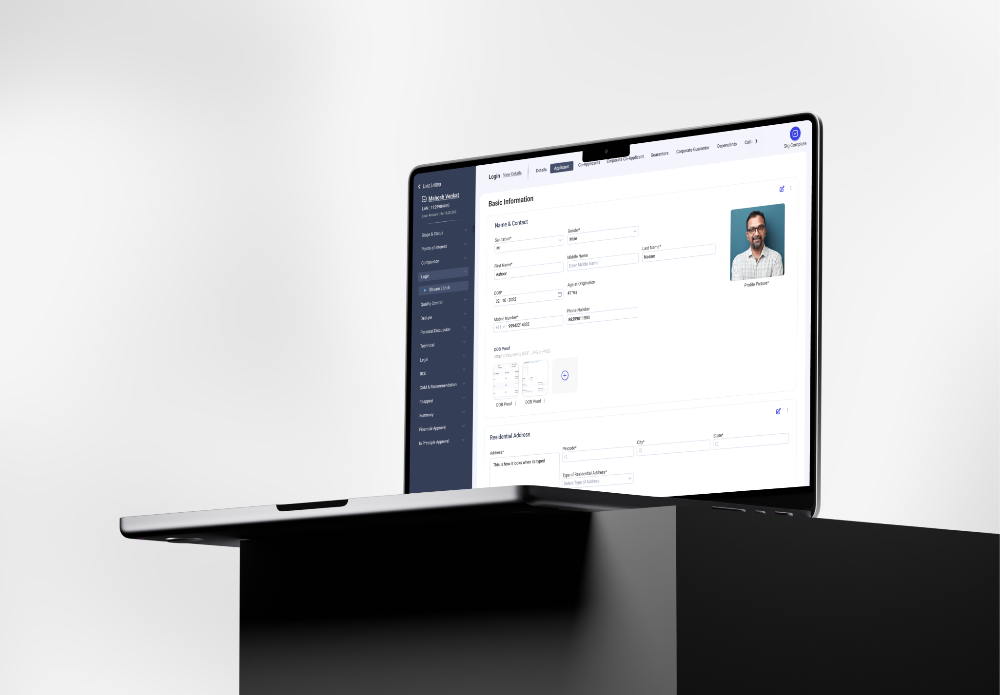
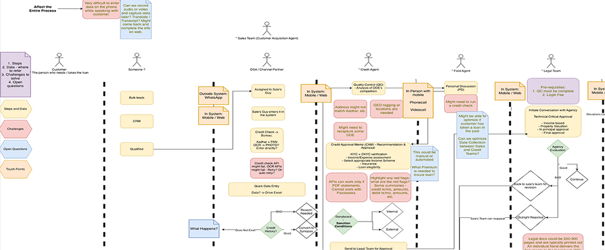
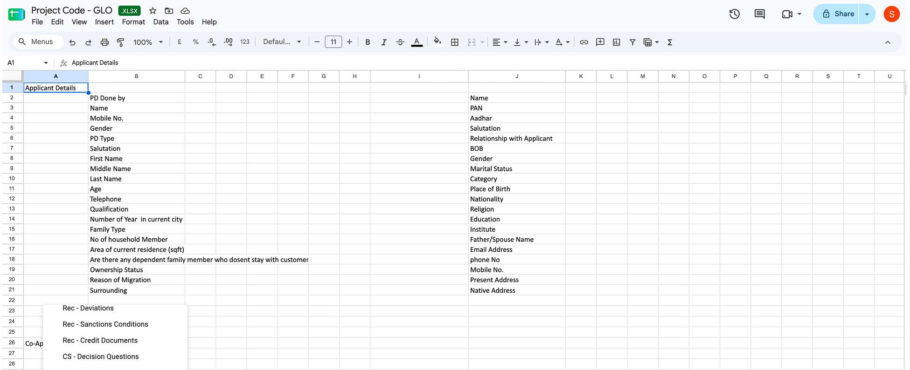
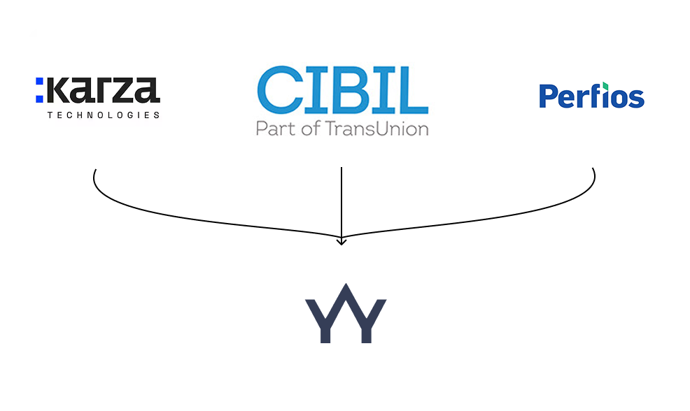
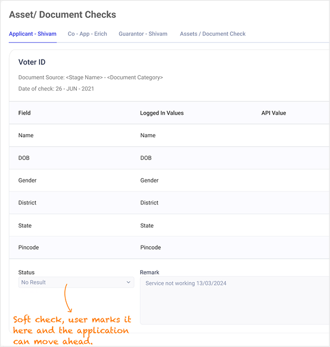
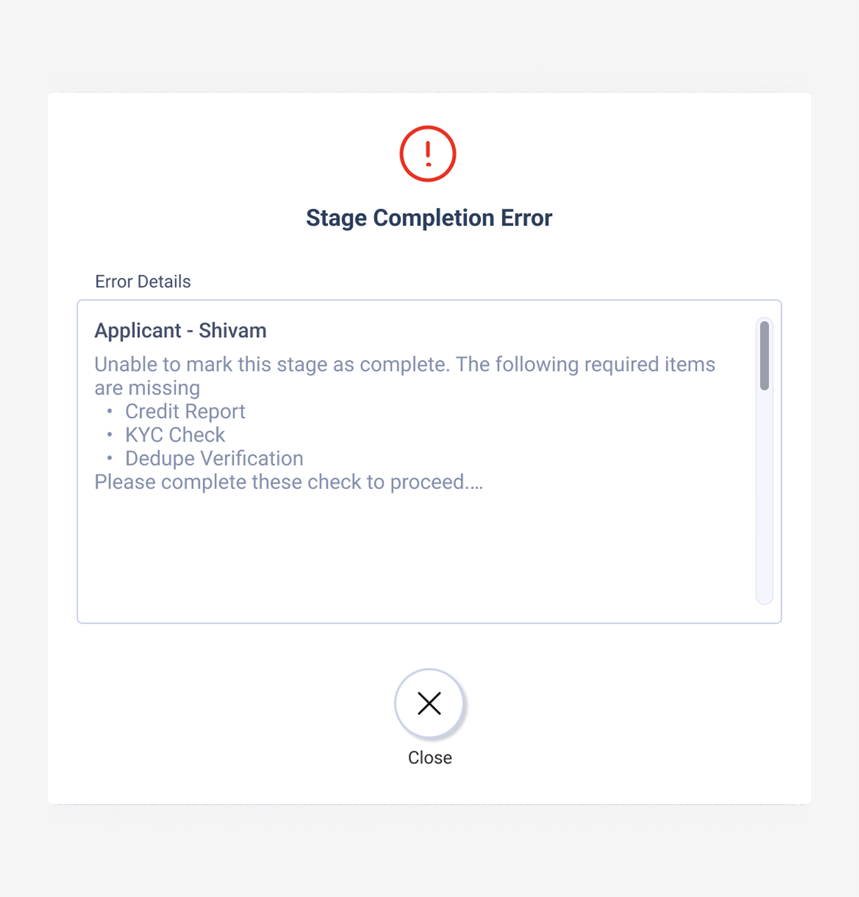
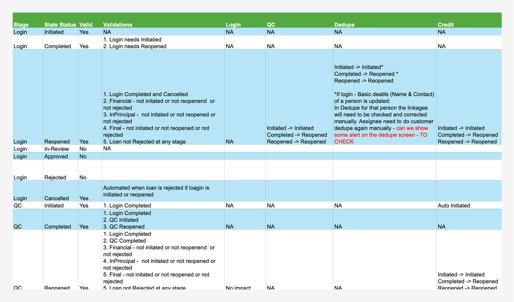

Enterprise app • UX Design • Fintech
How did I reduce loan processing time from 10 days to 4?
Designing an end-to-end loan origination system for India’s self-employed borrowers.

My role
More than wireframes.
On paper I was the lead UX designer. In practice it was a lot of things at once. Erich, a colleague, was with me the whole way, but plenty of what I did wasn’t drawing screens at all. I spent as much time collaborating with the UI, engineering and testing teams to make sure we were all building the same product in our heads. And under every wireframe there was the harder question I kept circling back to: how do all these modules and services actually fit together, what happens at the edges when one of them breaks, and what information does the other team need to know when working on it?
People ask how a designer ended up holding that much of the system. Honestly, it’s because I like this kind of mess. Complex system design is the part of the job I enjoy most, so from the first week I showed up to every stakeholder call and every walkthrough, even the ones I didn’t need to be in. Slowly I became the person who could hold the entire product in their head, and somewhere in there I became the face of the project.
What I did: UX research · Business process mapping · UX design · Information architecture · Interaction Model · Design QA
Scope
One question, chosen on purpose
Eighteen months, 350-plus web screens, 125 more on mobile. Far too much for one page, so I won’t try to show all of it. Instead I’ve pointed this whole case study at a single question: how do you cut the time it takes to process a business loan? It sounds narrow, but it’s the one that matters most. A faster loan isn’t just a smoother experience. If Sahayya can process a loan faster, it can process more of them, and more loans means more revenue.
Introduction
A lender built for India’s self-employed group.
Sahayya is a Bangalore-based home-loan company lending to India’s self-employed, borrowers whose income is hard to verify and who most banks turn away. It works with major banks like HDFC and Axis, underwriting home loans on their behalf.
The customer
The borrower — a credit score can’t see.
Sahayya lends to self-employed borrowers in tier 2–3 India who need financing quickly to build a house or grow a business. Their income is hard to verify and their credit score rarely reflects how they actually earn, so most banks turn them away. Reaching them means meeting them where they are, on their terms.
Discovery
The process on paper, and the process in the field.

To design the system, I first had to see how the loan really moved. A walkthrough with the Sahayya team revealed a clean pipeline on paper hiding a web of dependencies: credit checks that failed with no retry, bank analysis that only read PDFs, a risk check that could reopen a file even after payout.

So before touching a screen, my product manager and I rebuilt the whole product in a spreadsheet. Stage by stage, we listed every field we would capture, every sub-stage, and how each one connected to the next. It was the only way to feel how big this thing really was, and it became the backbone for everything that came after.
The field is where the tidy diagram fell apart. I shadowed Prassanna, the Sales Head, visiting a restaurant owner. He never opened a form. He talked the owner through his sales, seasons and expenses while reading the room, did his sums on paper, and judged risk on instinct. No network, the questions jumping around, and half of what the loan needed simply wasn’t there on the spot.
The problems
Three questions the design had to answer.
If the goal was a faster loan, speed itself was never the thing to design. Speed is just what you get once you clear away everything slowing a file down. And this file had plenty. A single application carried 1,200+ fields, keyed in by hand, offline, and rarely in order, across thirteen stages that all leaned on each other. One wrong entry could bounce the whole thing back to the start.
- How might we stop errors at the source, when 1,200+ fields are entered by hand?
- How might we keep a loan moving when an outside service is down, without letting missing data slip through to disbursement?
- How might we stop a late change in one stage from silently breaking every stage that already depended on it?
Solution 01
Stopping bad data at the source.

The goal was simple: let the agent confirm data, not type it. But before deciding what to automate, I had to know what we were collecting and where each piece actually lived. So my product manager and I sorted every input by its source, and it fell into four buckets.
- Identity — the borrower uploads a PAN (India’s PPSN) or driving licence, it’s verified by an OTP to their registered mobile, and the details flow straight into the form. Verified, not typed.
- Bank statements — digital and machine-readable, so they could be fetched and processed automatically, without an agent keying a single figure.
- Credit score — digital too, but gated. It needed the borrower’s consent to release, and once requested it took around 40 to 45 minutes to come back.
- Collateral — the one that stayed on paper. Property documents were scanned and uploaded, with OCR lifting the details off the page.
The pattern was clear: wherever data already lived in a trusted source, the agent should confirm it, not re-enter it. Fields that could be inferred filled themselves too, a pincode bringing in its city and state, the agent’s branch and manager already set. Every field we pulled or inferred was one less chance for an error, and one less thing slowing the file down.
But three of those buckets came with a catch. Identity, bank statements and the credit score all leaned on outside services, and the credit score alone could take the better part of an hour. The loan now moved only as fast as data we didn’t control.
Solution 02
Keeping loans moving when the data isn’t there yet.
Solving one problem had quietly made the next. A credit score that takes 45 minutes to come back, a verification service that blinks offline, and suddenly a loan is sitting idle, waiting on data no one at Sahayya controls. I couldn’t let that freeze the whole file. But I also couldn’t let a loan reach disbursement with a hole in it. So I graded the checks by what was at stake.

Soft checks keep the work moving. Inside a stage, an agent can finish every other step while a slow value catches up. To mark the stage complete, the system looks for that value; if it isn’t back yet, the agent notes why, flags it as pending, and moves on. A 45-minute credit pull holds up one field, not the whole application.

A hard gate before disbursement. The final step is the exception. Before a loan can be marked ready to disburse, every required value has to be present, no bypass. A gap can wait in the middle; it can never reach the end.
Solution 03
The brain of the system.

The loan never moved in a straight line. A change in stage one didn’t stay there; it rippled into two, then three, and on down the chain, quietly leaving later stages working off data that had already changed. For a loan that has to be accurate and compliant, that was the real danger, not a slow file, but a wrong one that still looked finished.
I needed a way to guarantee that whoever opened a file, whenever they opened it, was working from current, valid data. So I mapped it. With the whole product in my head, I laid every stage down the rows of a sheet and every status across the columns, then worked through it one cell at a time: in this state, what can the user do, what does the system do, what has to reopen downstream, and how is that enforced? It was slow, deliberate work, a single rule at a time, but it was the only way to tame a process this interdependent.
That sheet became the brain of the system. It was the product’s interaction model, every action a user could take at every stage and exactly how the system would respond, written precisely enough that the business ran on it, the dev team configured the logic straight from it, and compliance was built into the structure instead of left to memory.
The impact
From ten days to four.
Every decision in this case study pointed at the same thing: time. Verified data pulled straight from the source meant less to key in and less to send back for correction. Graduated checks kept a file moving instead of stalling on a credit score that hadn’t arrived yet. And the interaction model meant a late change reopened only what it actually touched, instead of quietly corrupting the file or forcing a full re-check. Together, they brought a loan from ten days to four.
The real value isn’t the speed, it’s the capacity it unlocks. When the same team can clear a loan in four days instead of ten, they can process far more loans in the same window without adding a single person, and for a lender, more loans processed is more revenue. The system took the ceiling off how much the existing team could do.
And the faster number held up because the system had become hard to get wrong. Agents stopped re-entering data they couldn’t trust, credit teams stopped inheriting errors from upstream, and compliance stopped depending on anyone’s memory. Speed was the headline; reliability is what made it last.
What I learned
Things I took from this.
Real life never matches the flowchart.
The loan looked simple on paper. On the ground it was messy: offline, out of order, full of exceptions. I learned to design for how the work actually happens, not how the diagram says it should.
The most important thing I built was invisible.
It wasn’t a screen. It was the set of rules running quietly in the background that kept the whole system correct. Sometimes the best design is the part no one sees.